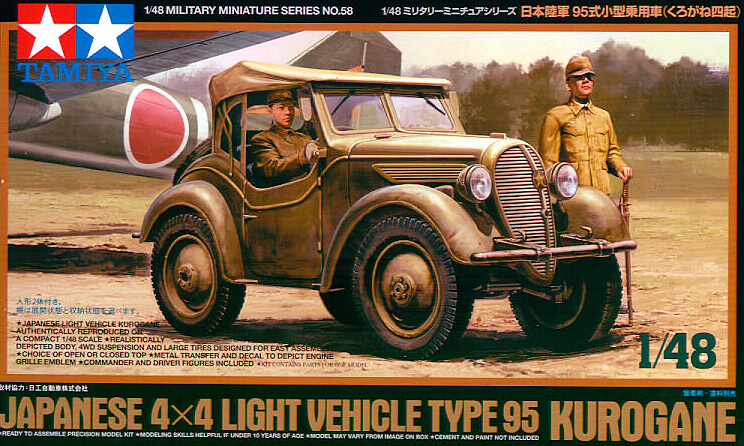
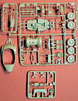
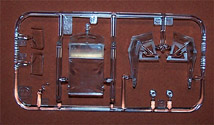

{kind=link}
{kind=link}
{kind=link}
{kind=link}
{kind=link}
{kind=link}
{kind=link}


Tamiya 1/48 Kurogane Type 95 Scout Car

Kit #32558 MSRP $22.50
Images and text Copyright © 2008 by Matt Swan
Developmental Background
Probably the first vehicle of complete Japanese design and most likely the first practical four wheel drive vehicle the Kurogane, conceived in 1935 and entering production in 1937 became a very useful tool to the Japanese military. This cute little scout car was powered by a simple air cooled, two cylinder four stroke V type engine and seated three. The engine only produced 33 bhp with a displacement of 1300-cc but was ideal for the role similar to the Allied Jeep. It was used widely by both the Army and the Navy as a scout car, liaison vehicle and messenger. It was also used by German forces in limited capacity. Approximately 4800 of the type 95 were produced between 1937 and 1944.
The Kit


This is a cute little kit and contains all the features we have come to expect from Tamiya. The parts are all molded cleanly with no flash, no sink holes, no noticeable injector pin markings and very fine mold separation seams. The kit floor pan includes a good level of drive train detail. The exterior detail consists of crisp recessed panel lines and smooth surfaces. The kit includes two figures, a driver and a standing officer. The driver fits well to the vehicle and with just a little care the hands can easily be positioned holding the wheel in a natural form. The officer includes a Samurai sword and is a nice touch. The kit includes optional pieces to build this with the top up or down. In the up position you will need to assemble three clear plastic pieces then mask the four windows prior to painting. The kit includes a very small decal sheet with an instrument panel on it and a single star decal. Also included are some metalized stickers which cover the rear license plate, a driver’s side mirror and a plaque for in the front radiator. Problem with these pieces is they have lots of excess carrier material that must be trimmed before they can be used. I did not bother with the radiator plaque but did use the rest. The instruction sheet is fairly small and brief but really, that is about all you need to put this one together.
Construction
I was looking this kit over one Sunday morning and decided about 9:oo am that I wanted to build this and jumped right in. I used a combination of acrylic Khaki paints using the darkest of the four I had on hand for the base chassis and body parts. Drive train details were brush painted with black. I chose a slightly lighter Khaki to use on the seats, a medium color for the figures and the lightest Khaki for the canvas top. I spent most of the day tinkering with the kit and by 5 pm had most of it assembled. The toughest aspect of the kit was masking those little side windows on the top, they were done with fine strips of masking tape trimmed with a scalpel. For the front windshield I used the butt end of a razor knife handle as a guide placed over some masking tape then traced around it with another knife. The circle of tape was then cut into a wedge and applied to the windshield. From there I simply sprays some Polly Scale clear flat on the parts then removed the mask – instant dirt pattern from the wipers.
The driver was placed on the seat then the arms were attached so they would meet the steering wheel properly then he was removed and painted. After he was complete and reinstalled in the car the top was attached. I dry brushed some steel across the wheel hubs, spotted a little sludge wash into the radiator and side vents then sealed the model with Polly Scale clear flat. For weathering I started by rubbing some ground pastel chalks across the fenders and tires. Next I took some baking soda and mixed it with Tamiya Earth tone paint then dabbed this onto the model with a chopped off paint brush. By time the model was complete it was now 7:00 pm on Sunday, a total of ten hours from start to finish. The extra two figures you see are from the Eduard Japanese figure set and were painted at the same time as the two kit figures.
Conclusions
This is a cute little kit ( yes, I said cute) and goes together very well. Just a little seam work is required on the three piece clear canvas top to get rid of the side seams but other than that the kit is a peach to assemble. I am very pleased to see manufactures producing more 1/48 vehicles suitable for use in dioramas and this one is a great addition to any Japanese display. While it is a little pricey for what you get it is not as bad as some offering coming from other manufactures these days, I give this a very good recommendation.